From farmland to urban heat: how robust is the link?
Farmland-to-built-up conversion and land surface temperature in Gia Lam and across Hanoi, 1999 to 2025
Truong Tuan Nghia (2540017) Nguyen Minh Anh (2540032) Hoang Ha Dang (2540028)
USTH, Space Applications and Services, group project 26 October 2026
1 Introduction. What? One question, three hypotheses
H1 Mapping
Part of the farmland became built-up land after 2018, and the change can be mapped.
H2 Heat
Converted land warms more than comparable farmland that stayed farmland.
H3 Nature nearby
Converted land closer to vegetation or water is cooler.
We claim an association, not a proven cause. LST is the temperature of the ground surface seen from space, not of the air.
1 Introduction. Why? Two-date comparisons hide their own assumptions
What exists
Hanoi studies link built-up land to LST from two dates. Local work documents urbanisation around Gia Lam.
What is missing
Nobody tests the three assumptions: the map is right, the control follows the same path, two clear scenes are comparable.
Why it is hard here
Monsoon cloud leaves few clear hot-season scenes, and the two land-cover products disagree.
2 Methods. Where and when? East Hanoi, 1999 to 2025
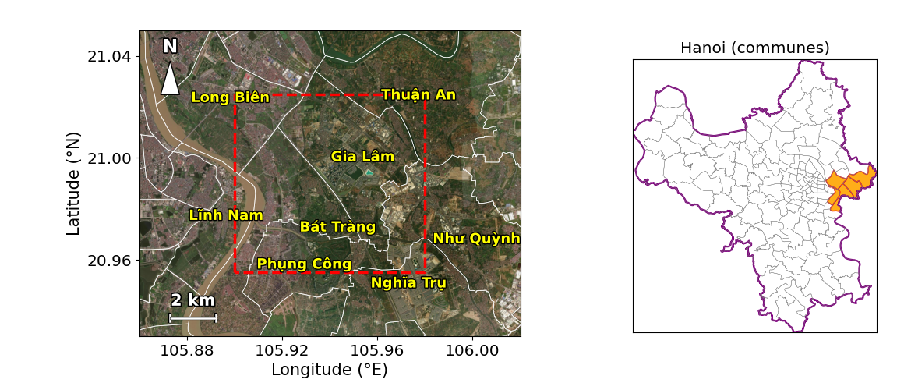
Where
Gia Lam, eastern Hanoi. About the union of four 2025 communes (117.7 km2). The district level was abolished on 1 July 2025.
When
Temperature 1999 to 2025 (635 Landsat scenes read). Land cover 2017 to 2025. Conversion window from 2018.
2 Methods. How? Land-cover maps first, temperature last
2018 to 2025
trained where Esri and WorldCover agree
Esri, own, consensus
635 Landsat scenes + ERA5
No circularity
Temperature never shapes the maps: land cover enters first, LST only in the last step.
Stability probe
Pixels that must not change class are tracked every year to measure classifier drift.
Weather control
ERA5 reanalysis: air temperature, soil moisture, radiation, rain and dew point at the overpass.
2 Methods. How? The scene-gap regression replaces the two-date difference
converted minus control
sensor, season
and pre-trend 1999 to 2017
400 times
gt = α + δ postt + Σ βj Wj,t + γsensor + θ seasont + εt
Why a gap
Both groups sit in the same scene, so the weather of the day acts on both.
Why blocks
Pixels in a 600 m block are alike (intraclass correlation 0.80): 14,581 pixels carry about 380 independent observations.
Placebos
Fake break dates and a one-sensor model test whether the effect is real.
3 Results. Eight clear scenes are not enough
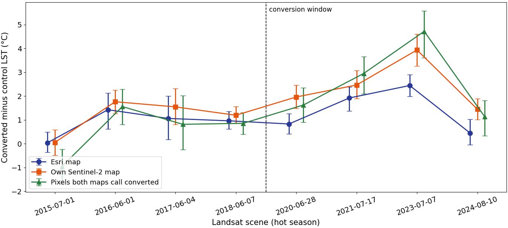
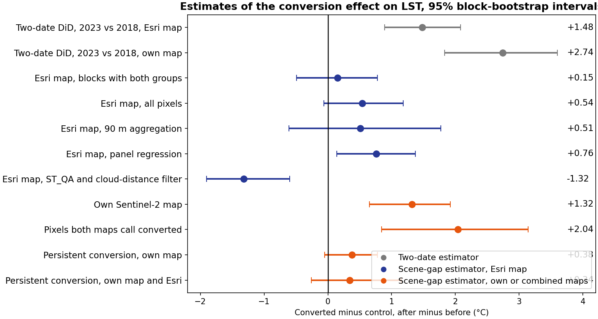
3 Results. H2: with all 383 usable scenes, the gap starts after 2018
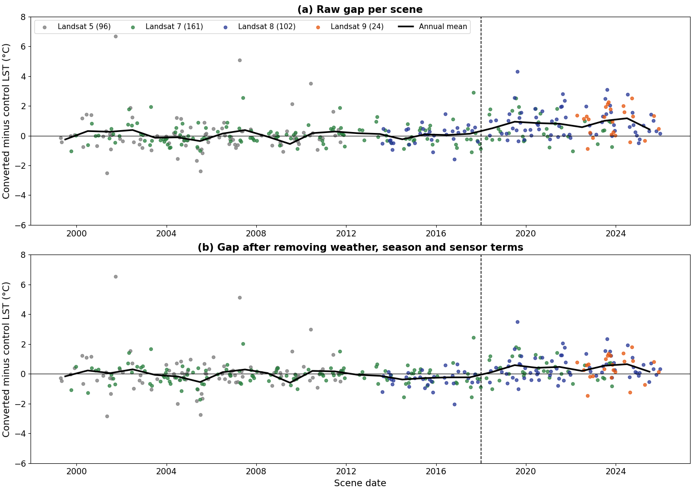
3 Results. H2: +0.5 °C, no pre-trend, placebos pass
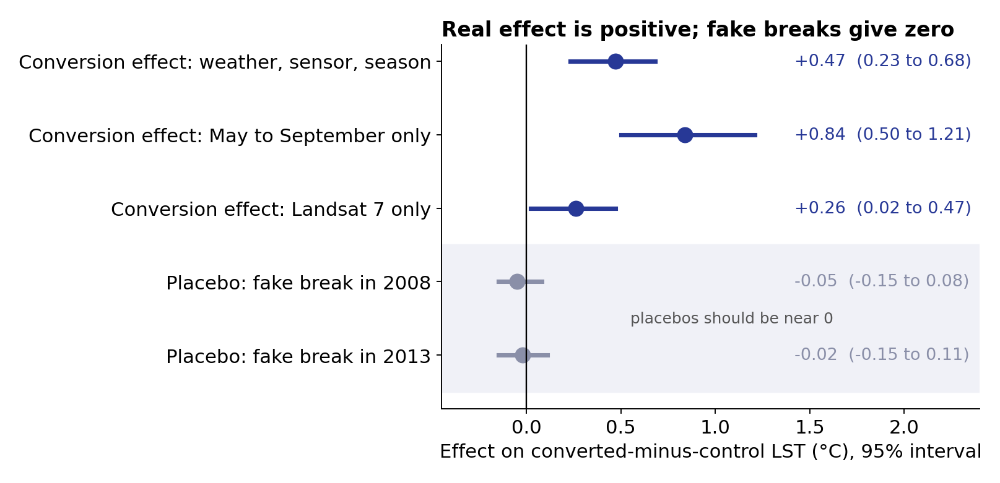
3 Results. H1: two land-cover maps agree on only 207 ha
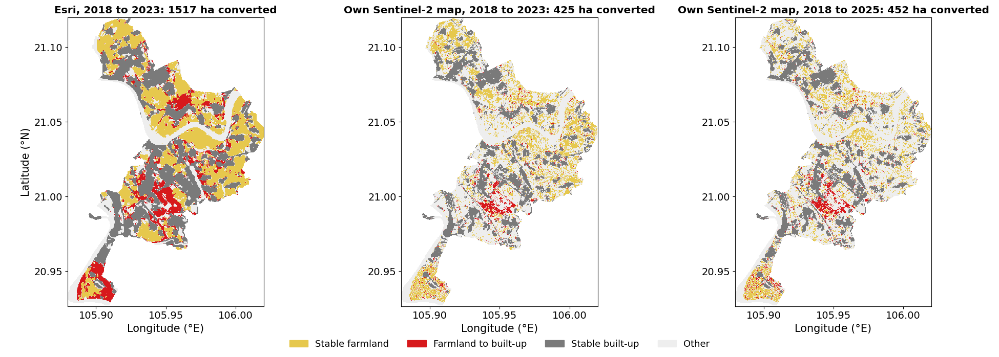
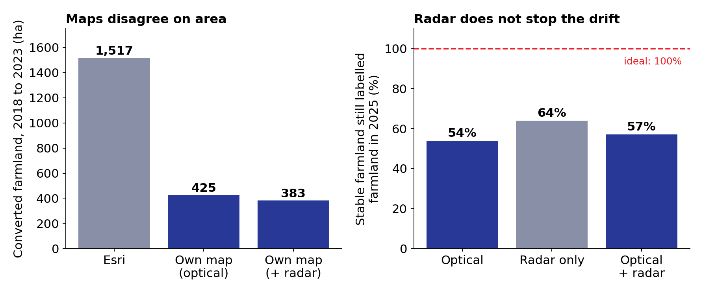
3 Results. H3 and all of Hanoi (exploratory)
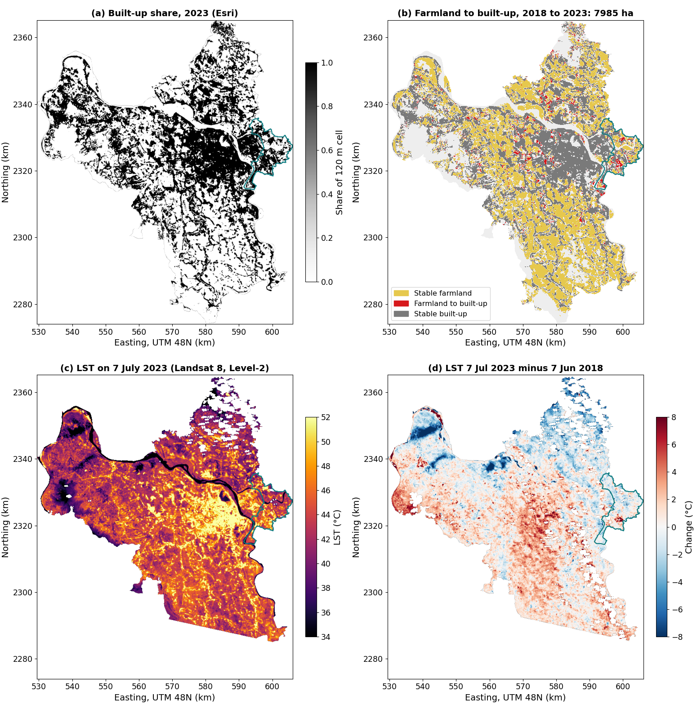
H3, one scene
7 July 2023. Trees: +0.27 °C per log unit of distance (0.16 to 0.38), supports H3. River and ponds: opposite sign.
Hanoi, eight scenes
About 8,000 ha converted. Pooled +0.68 °C (0.36 to 0.95); 13 of 16 districts positive, from -0.73 to +3.40.
Caution
Both use the weaker design. The placebo slope (+1.59) is as large as the real one (+1.82).
4 Discussion. A smaller answer, with its limits
Two designs, two answers
Two dates give 1.0 to 2.4 °C depending on the baseline. All 383 scenes give +0.47 °C, with no trend before 2018.
What is solid
Fake breaks give zero; one instrument still positive; sign robust across Hanoi districts.
Data limits
Thermal bands are 60 to 120 m, resampled to 30 m. Landsat 7 has SLC-off gaps and an earlier overpass after 2017. Morning scenes only.
5 Conclusions and perspectives
Conclusions
Converted farmland is about +0.5 °C warmer (0.23 to 0.68; range 0.26 to 0.84), +0.84 °C in the hot season, after 18 years without a pre-trend. Trees help, water does not.
Perspectives
1. Label 200 points blind.
2. Dynamic World 2018 and 2025 in Earth Engine.
3. Older land-cover maps for the Landsat 5 era.
4. Hanoi with the all-scenes design.
5. Overpass-time term for Landsat 7.
Tool disclosure: an AI assistant helped with code, figures and text (see report). Contributions: Minh Anh (study area, GEE1), Dang (Landsat LST), Nghia (Sentinel-2, GEE2).
A1 Appendix. Terms used in this talk
| Term | Meaning |
|---|---|
| LST | Land surface temperature: radiant temperature of the ground, from the thermal band |
| Gap | Mean LST of converted land minus mean LST of control farmland, per scene |
| ERA5 | Weather reanalysis; gives air temperature, soil moisture, radiation, rain at the overpass |
| NDVI, NDBI, MNDWI | Indices of vegetation, built-up land and open water from Sentinel-2 bands |
| VV, VH | Radar backscatter of Sentinel-1 in two polarisations |
| Placebo, fake break | A test where the effect should be zero: a conversion date that never happened |
| Block bootstrap | Resampling 600 m blocks, not pixels, to keep spatial dependence in the intervals |
| ICC | Intraclass correlation: how alike the pixels of one block are (0 to 1) |
| SLC-off | Landsat 7 scan-line failure since 2003: striped gaps in each scene |
A2 Appendix. Data and what each source is used for
| Source | Resolution | Use |
|---|---|---|
| Landsat 5, 7, 8, 9 Collection 2 Level-2 | 30 m (thermal 60 to 120 m) | LST for 635 scenes, 1999 to 2025; 383 usable |
| Sentinel-2 L2A | 10 m | Median composites 2018 to 2025; indices; classifier features |
| Sentinel-1 RTC | 10 m | VV and VH backscatter added to the classifier |
| Esri 10 m land cover 2017 to 2023 | 10 m | Conversion definition and training labels |
| ESA WorldCover 2020, 2021 | 10 m | Training labels where it agrees with Esri; check |
| ERA5 and ERA5-Land (Open-Meteo) | about 9 to 31 km, hourly | Weather at each overpass |
| MODIS MOD11A1 | 1 km, daily | Cross-check of the two LST recipes |
| Copernicus DEM, JRC water | 30 m | Elevation, distance to water for H3 |
A3 Appendix. Study area and the temperature product
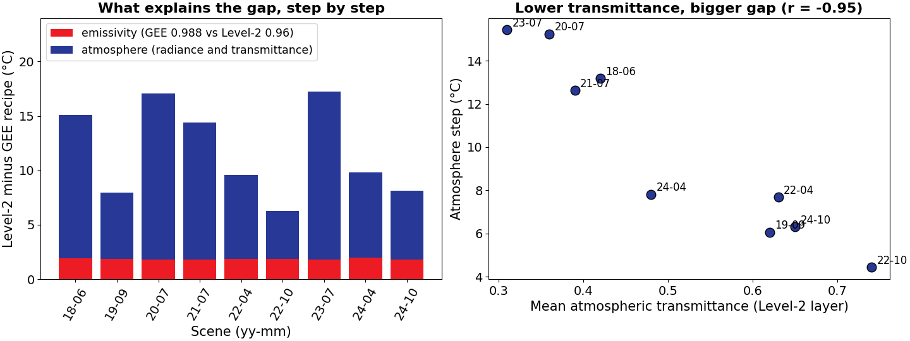
A4 Appendix. Three conversion maps
A5 Appendix. Does radar help the classifier?
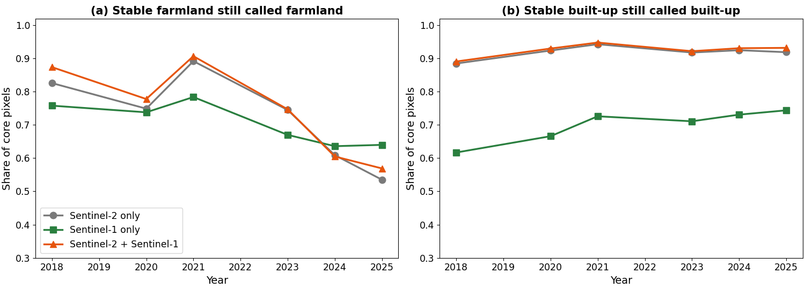
A6 Appendix. Why eight scenes were not enough
A7 Appendix. Dependence between pixels
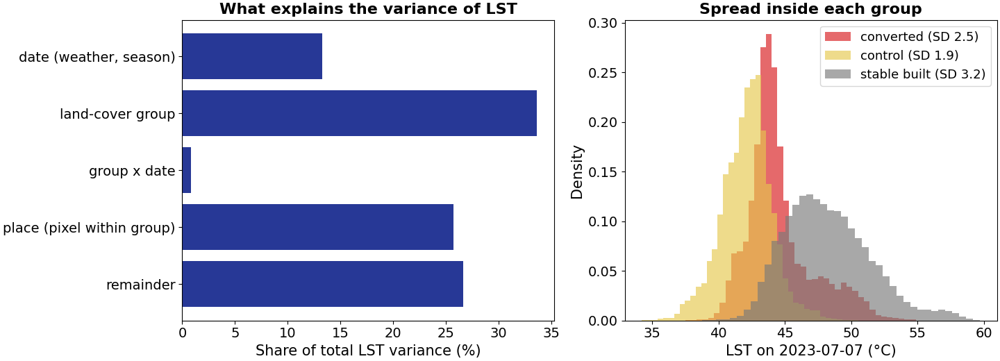
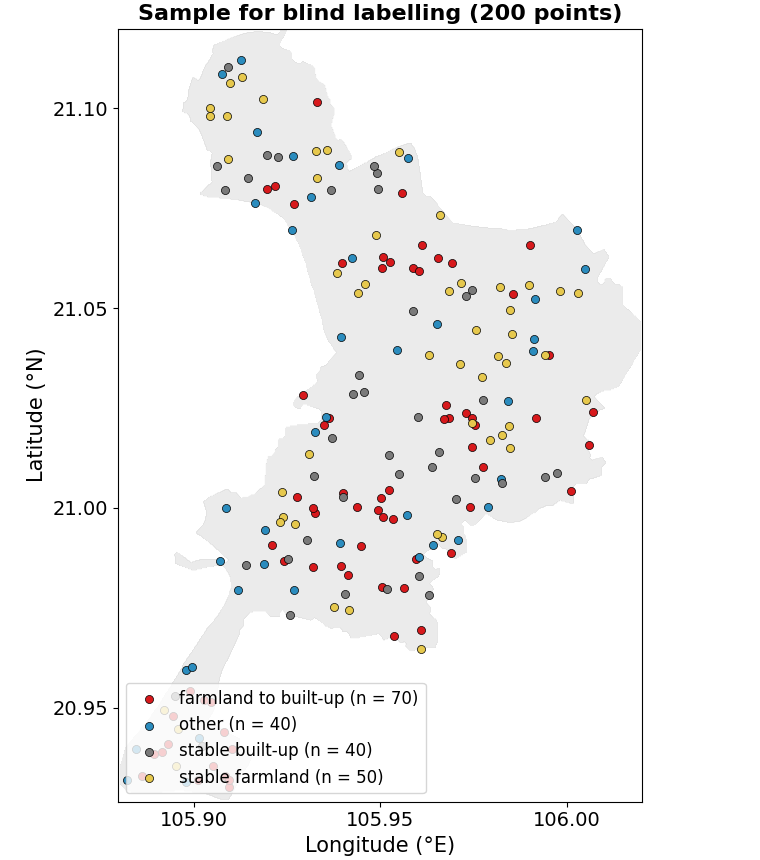
A8 Appendix. All of Hanoi at 120 m
What it shows
About 8,000 ha of farmland became built-up land in Hanoi between 2018 and 2023 (Gia Lam outlined in teal). Esri puts the total gain of built-up land at 21,432 ha.
How to read it
Warm colours in (c) follow the dense core and the new estates in the east; blue patches in (d) are cooler than in 2018. Exploratory: the eight-scene design.
A9 Appendix. Districts and dose-response
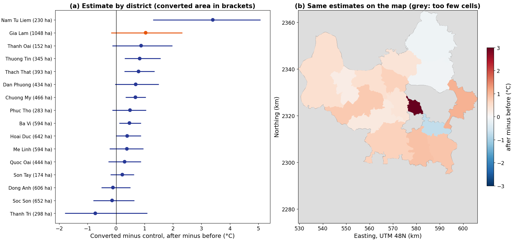
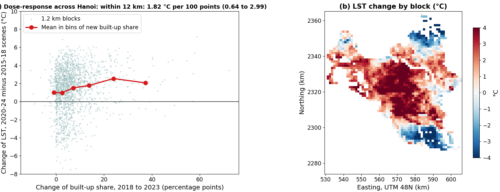
A10 Appendix. Filling cloud gaps
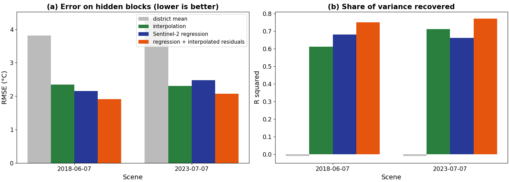
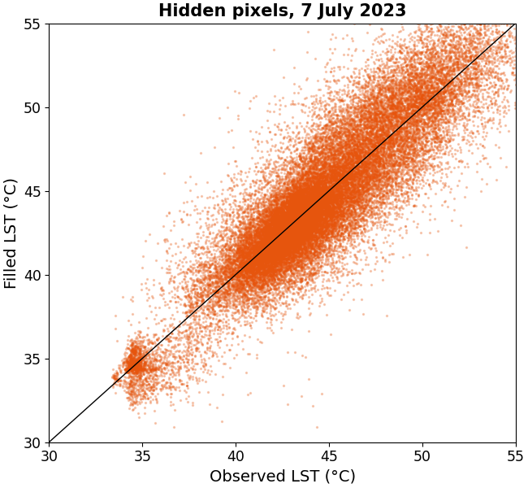